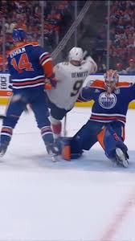
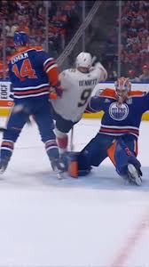

1. Playing Dirty - Too Physical, Too Aggresive
Critics argue that the Panthers' brand of hockey toes the line between intense and reckless. Reddit fans voiced concerns: "For the well of Hockey culture... we are all familiar with how trashy, dirty, and flat-out dangerous the Panthers have been this season and especially so in playoffs" "Intent to injure cannot become a standard"
- ESPN described their style as "trash-talking bullies" who relish humiliating opponents, both on the scoreboard and physically.
- A major brawl in Game 3 of the Final drew attention when the Panthers seemed to bait the Oilers into illegal hits. The Oilers racked up 85 penalty minutes—most in a Final game in nearly four decades—reinforcing accusations of inciting dirty hockey
 Second

Second

Look at these ratty hits by Sam Bennett